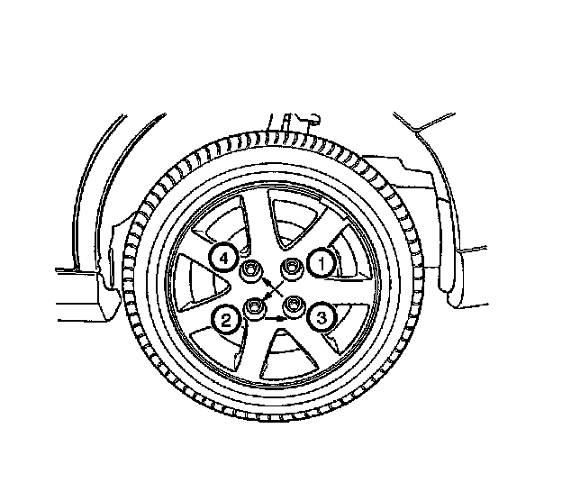
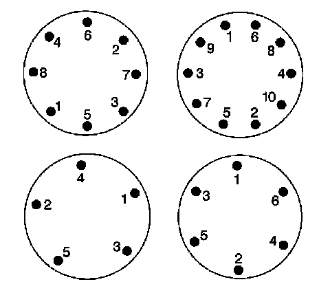

Wheels/Tires - Proper Wheel Installation/Wheel Torque Technique
INFORMATIONBulletin No.: 12-03-10-002
Date: November 26, 2012
Subject: Proper Wheel Installation and Wheel Torque Techniques
Models:
2006-2013 GM Passenger Cars and Light Duty Trucks
Some customer may report vibration in the steering wheel or the seat centered at a frequency of 10-14 Hz, between 93-115 km/h (58-72 mph). First order tire/wheel vibration may be misdiagnosed as tire/wheel assembly imbalance or excessive tire Radial Force Variation.
Inappropriate wheel torque methods may cause the wheel and tire assembly to be offset when mounting. This offset causes the mass of the tire and wheel to "orbit" the axis of the hub and creates vibration similar to a tire with high RFV or a tire with an imbalance.
Notice
Improper torque may cause distortion of the brake rotor, and may result in variance in wheel mounting that can cause smooth road shake vibration.
Proper Wheel Installation Information
Remove the tire and wheel assemblies from the vehicle. Index them at least two stud positions from the previous position and re-install them. Tighten using an appropriate torque pattern technique in the three steps below. Do not use torque sticks or an impact driver to tighten wheel lug nuts.
Important
Do not use torque sticks or an impact driver to tighten wheel lug nuts.
1. With the wheel off of the ground, install all lug nuts hand tight using only a socket.
2. Snug all lug nuts using a star or "criss-cross" pattern using a hand wrench. Refer to the appropriate illustration for the number of lugs on the wheel being installed.


3. Lower the vehicle until there is just enough contact to provide resistance to complete torquing to specification with a torque wrench.

Disclaimer